Disassembly

Note: Perform the inspection procedure prior to disassembling the differential assembly.
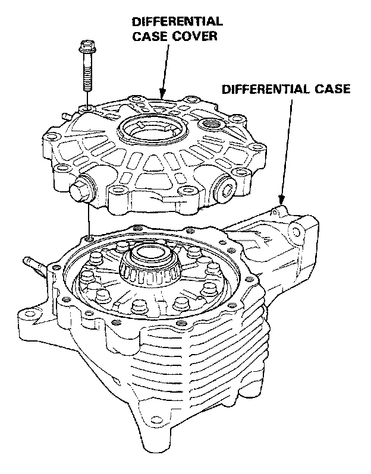
1. Remove the differential case cover.
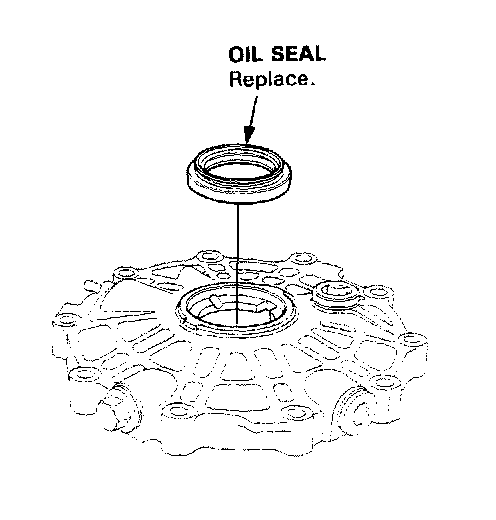
2. Remove the oil seal from the differential case cover.
3. Remove the bearing outer race and 75mm thrust shim from the differential case cover by driving them out or by heating the housing to approx. 100° C (212° F).
Caution: Do not reuse the thrust shim if the outer race is driven out. Let the case cover cool to room temperature if the unit is heated before adjusting the bearing preload. Do not exceed 100° C (212° F) when heating unit and replace the bearing with a ne on if the outer race is replaced.
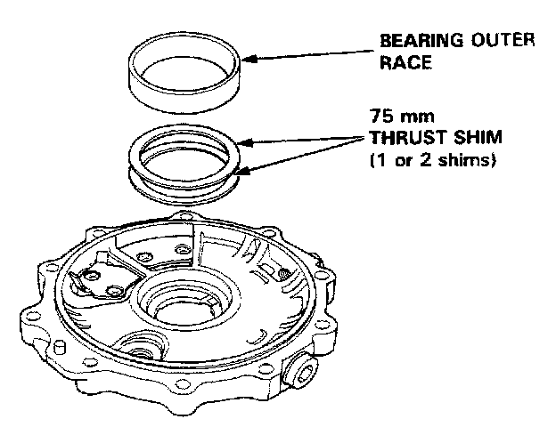
4. Remove the breather chamber plate and oil collect plate.
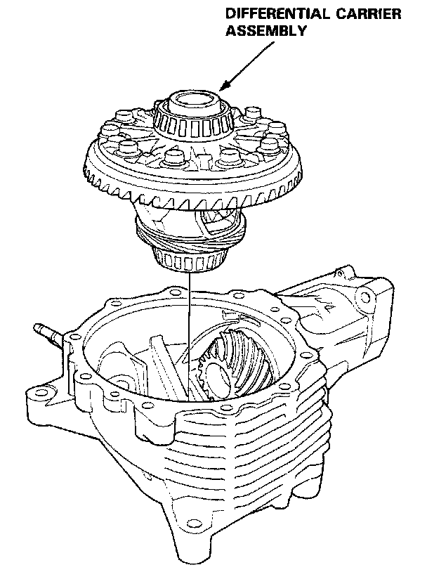
5. Remove the differential carrier assembly from the differential case.
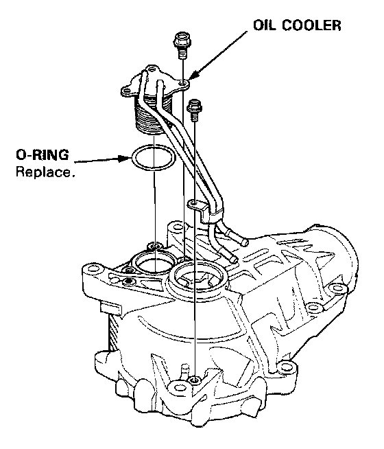
6. Remove the oil cooler.
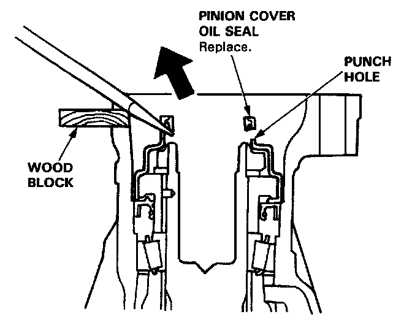
7. Using a wood block to protect the differential case, punch two holes in the pinion cover oil seal 180° apart. Use the same pry point and alternate between the two holes to lift and remove the seal as shown.
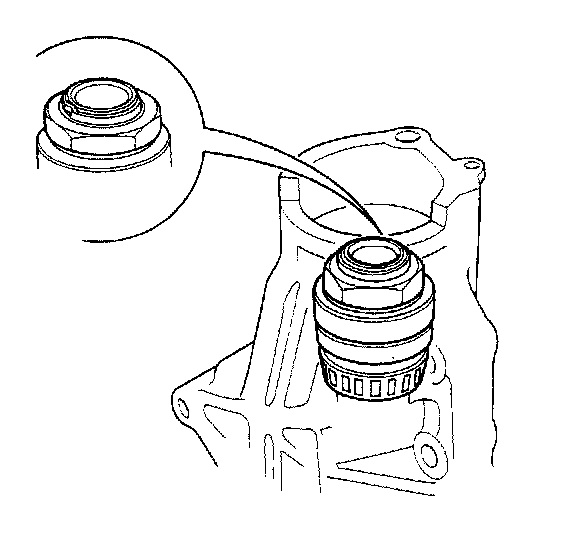
8. Raise the locknut tab from the groove of the shaft.
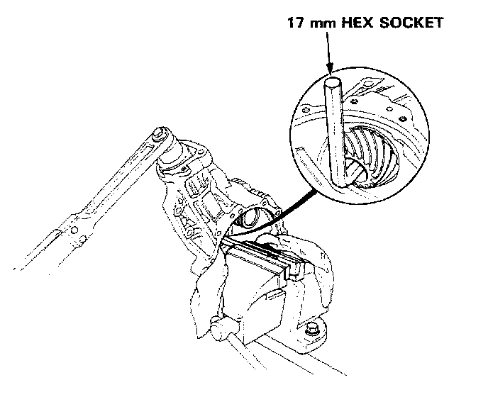
9. Hold the drive pinion using a 17mm hex socket or wrench as shown above.
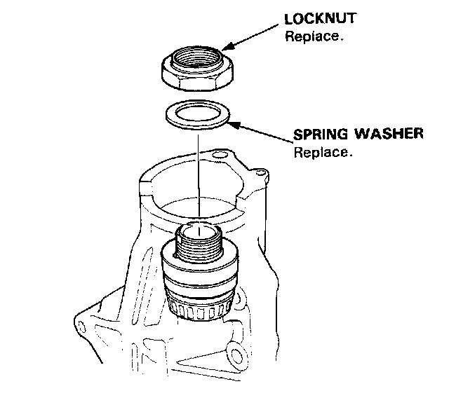
10. Remove the locknut and the spring washer from the drive pinion. Note that the locknut has left-handed threads.
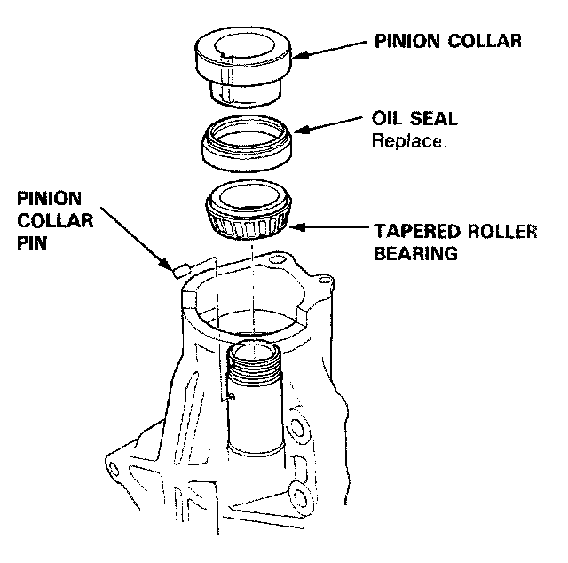
11. Remove the pinion collar, oil seal, pinion collar pin and tap the pinion shaft through the tapered roller bearing.
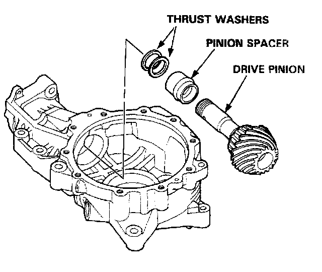
12. Remove the drive pinion, pinion spacer and thrust washer.
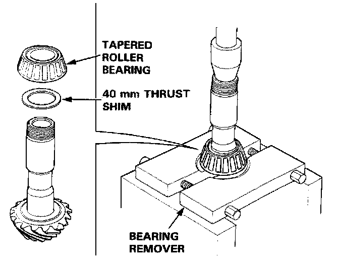
13. Remove the tapered roller bearing using a press.
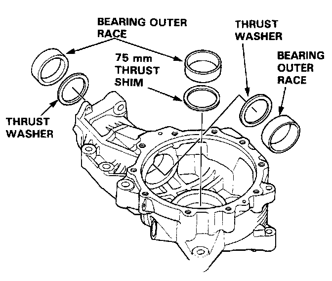
14. Remove the bearing outer races and thrust shims by driving them out from behind using the grooves provided or, if necessary, heating the case to approx. 100°C (212°F).
Caution: Do not reuse the thrust shim if the outer race was driven out. Let the differential cool to room temperature if heated before adjusting the bearing preload. Do not exceed 100°C (212°F) when heating the case and replace the bearing with a new one whenever the outer race is replaced.
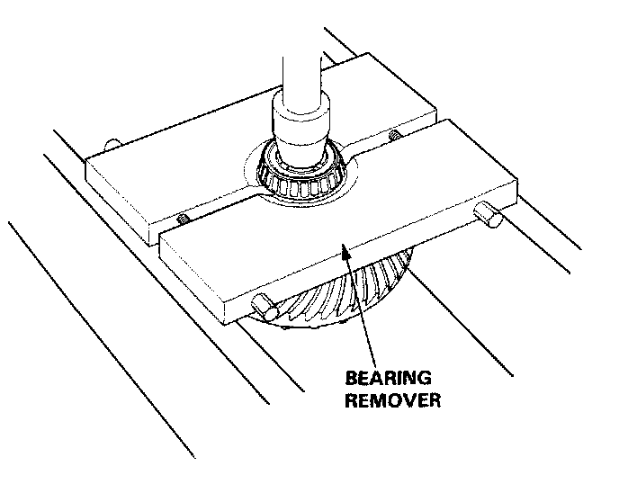
15. Remove the tapered roller bearings.